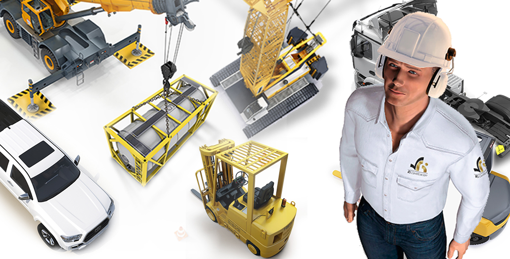
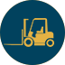
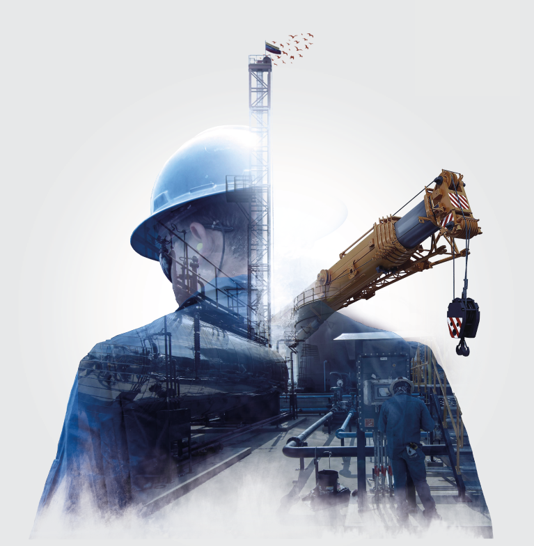
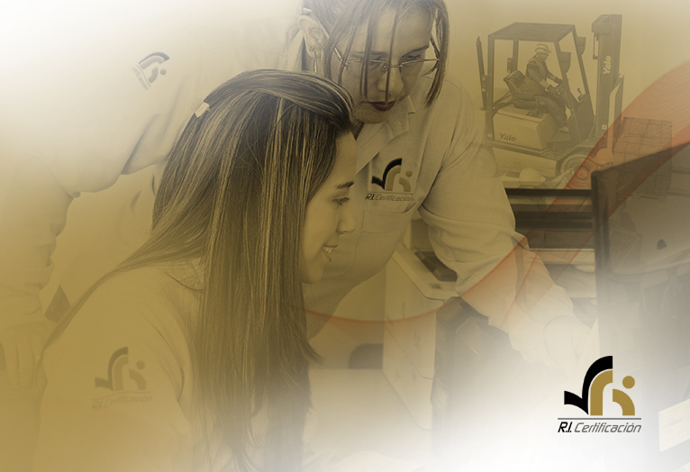
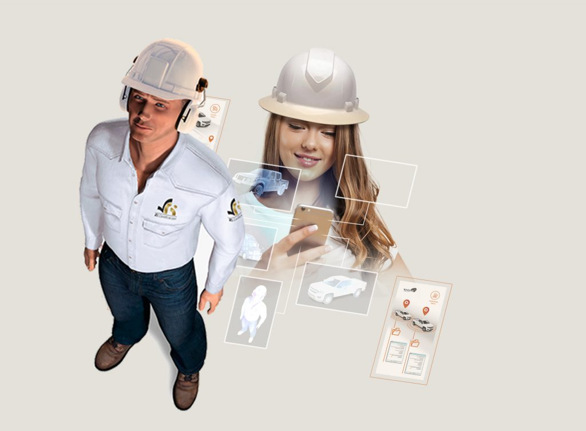
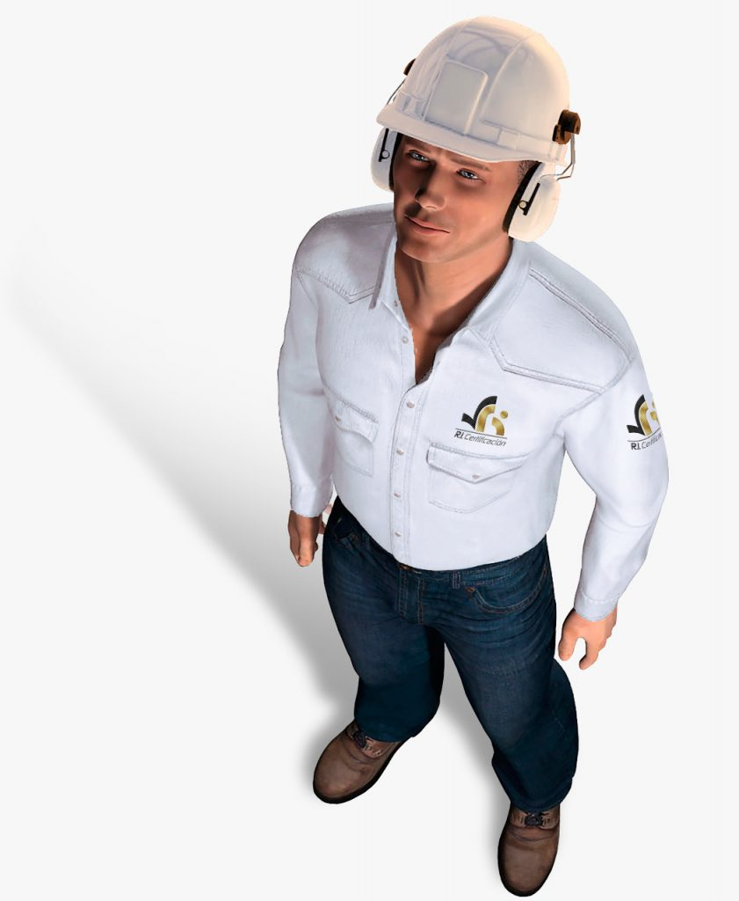

Grupo R.I.
Somos su mejor aliado para la evaluación de competencias y el aseguramiento de levantamiento Mecánico de Cargas para equipos y personas.
Certificación personas
Evaluación de competencia del factor humano para el desempeño de sus funciones.

Inspección de Equipos
Servicio de inspección estructural y operacional de equipos de izaje de carga, elevación de personas, maquinaria de movimiento de tierra, manejo de materiales y accesorios de izaje de carga.
Acreditaciones
Estas son las acreditaciones que han sido emitidas a favor nuestro por parte del Organismo Nacional de Acreditación de Colombia ONAC.

Conózcanos
Desde el 2014 trabajamos en el aseguramiento de las operaciones a través de la evaluación de competencias de personal en izaje de cargas.
Contamos con una amplia experiencia en certificación de personas y equipos como: Montacargas, puente grúas, grúas móviles, plataformas de elevación, excavadoras, cargadores y elementos de izaje.
Consulta Certificados
En esta sección podrá consultar nuestra base de datos de certificados, con su número de identificación y código de carné.


Queja o Apelación
Con el objetivo de ofrecer un buen servicio y atención, ponemos a su disposición el presente formato para poder registrar, atender y solucionar toda queja o apelación que requiera exponer.

Calle 85 No. 24 - 39
Bogotá - Colombia
Teléfono: (601)6358147
Correo: comercial@ricertificacion.com